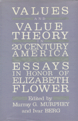

<body bgcolor="#FFFFFF" text="#000000" link="#0000FF" vlink="#CC0000" alink="#CC0000"><center><hr width="350" size="1" align="center" noshade>Essays on moral philosophy written in honor of Elizabeth Flower's retirement<hr width="350" size="1" align="center" noshade><p><a href="https://cdcshoppingcart.uchicago.edu/Cart/ChicagoBook.aspx?ISBN=9780877225577&&PRESS=temple" target="_top">Buy this book!</a> | <a href="https://cdcshoppingcart.uchicago.edu/Cart/Cart.aspx?PRESS=temple" target="_top">View Cart</a> | <a href="https://cdcshoppingcart.uchicago.edu/Cart/Cart.aspx?PRESS=temple" target="_top">Check Out</a></p><p></p></center><!--none//--><h1>Values and Value Theory in Twentieth-Century America</h1>
<H2>Essays in Honor of Elizabeth Flower</H2>
<h3>edited by Murray G. Murphy and Ivar Berg</h3>
<P>cloth 0-87722-557-5 $42.50, Sep 88, <FONT COLOR=#990033>Out of Stock Unavailable</FONT>
<BR> 308 pp
</P><BLOCKQUOTE><I>"This volume is a timely response to Allan Bloom’s phenomenally successful book, </I>The Closing of the American Mind<I>. These essays are evidence that there are vigorous academic intellects in the United States committed to open, rational ideals of democracy.... Certainly, these American philosophers and the philosopher they are honoring have no intention of following Bloom into some neo-medieval monastery. This festschrift could help alert the academic community to this recidivism in its latest and subtlest form and help set straight the intellectual accounts of values and of education in this troubled period."</I>
<br>&#151<b>Darnell Rucker</b>, Skidmore College<I></I></BLOCKQUOTE>
<p>Despite the dominance of analytic philosophy in this century, traditional moral philosophy and pragmatism have continued to shape our values and inform our culture. Elizabeth Flower has been one of the leaders in maintaining the strength of this tradition. In honor of her retirement from teaching at the University of Pennsylvania, this collection of essays by eminent American writers, some former students of Flower’s, displays something of the breadth that has characterized her work as well as the unity underlying it.
<BR>&nbsp;<h2>Contents</h2><P>
<p>1. The Concept of Value and Its Travels in Twentieth-Century America &#150 Abraham Edel
<br>2. Whatever Happened to Pragmatism? &#150 Robert Schwartz
<br>3. John Dewey and the Founding Fathers &#150 R. W. Sleeper
<br>4. Dewey and the Class Struggle &#150 Peter Manicas
<br>5. Dewey, Inquiry, and Problem-Solving &#150 Finbarr W. O’Connor
<br>6. The Gamble for Excellence: John Dewey’s Pedagogy of Experience &#150 John J. McDermott
<br>7. Thorstein Veblen: Instinctive Values and Evolutionary Science &#150 Murray G. Murphey
<br>8. The "TWO Cultures" and the Modem Imagination &#150 Leon Edel
<br>9. Truths of Fiction: Value as Metaphor in Modem Literature &#150 Chaim Potok
<br>10. Rationality, Ritual. and Relativism &#150 Lawrence Foster
<br>11. A Limited Defense of the National Interest &#150 Robert L. Simon
<br>12. Teaching "Ethics in Business": Leave It to Sisyphus &#150 Ivar Berg
<br>13. Computers at School &#150 Israel Scheffler
<br>14. Dirty Hands &#150 Joseph Margolis
</P><BR>&nbsp;<H2>About the Author(s)</H2>
<P><b>Murray G. Murphey</b> is Professor of American Civilization at the University of Pennsylvania.</P>
<P><b>Ivar Berg</b> is Professor of Sociology and Associate Dean for Undergraduate Education in the School of Arts and Sciences at the University of Pennsylvania.</P>
<BR><H2>Subject Categories</H2>
<p><A HREF="/tempress/philosophy.html" TARGET="_top">Philosophy and Ethics</a>
</p>
<p align="center"><a href="https://cdcshoppingcart.uchicago.edu/Cart/ChicagoBook.aspx?ISBN=9780877225577&&PRESS=temple" target="_top">Buy this book!</a> | <a href="https://cdcshoppingcart.uchicago.edu/Cart/Cart.aspx?PRESS=temple" target="_top">View Cart</a> | <a href="https://cdcshoppingcart.uchicago.edu/Cart/Cart.aspx?PRESS=temple" target="_top">Check Out</a></p><p><font face="Arial" size="1"><a href="copyright.html" onMouseOver="window.status='Web Copyright Policy';return true;" onMouseOut="window.status=''" title="Web Copyright Policy">&copy;</a> 2015 <a href="http://www.temple.edu" target="new" onMouseOver="window.status='Link to Temple University home page';return true;" onMouseOut="window.status=''" title="Link to Temple University home page">Temple University</a>. All Rights Reserved. http://www.temple.edu/tempress/titles/583_reg.html</font></p>